App preview
See the real South African farm management software.
A gallery of the latest Farming Ledger screens, covering every section in the app sidebar. Private account details are masked.
Latest app screens
Every sidebar section, shown as it appears in the app.
Each image below comes from the current release and includes a short explanation of the section.
Management
Money, stock, and the daily picture.
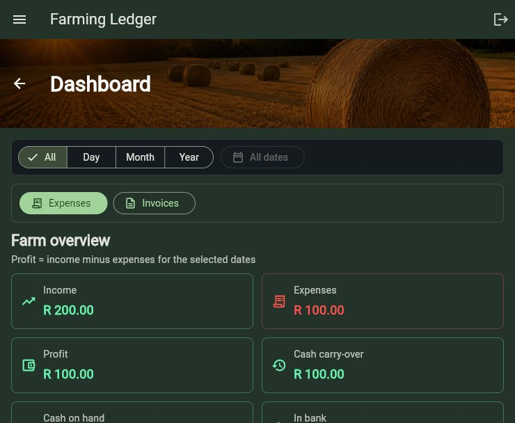
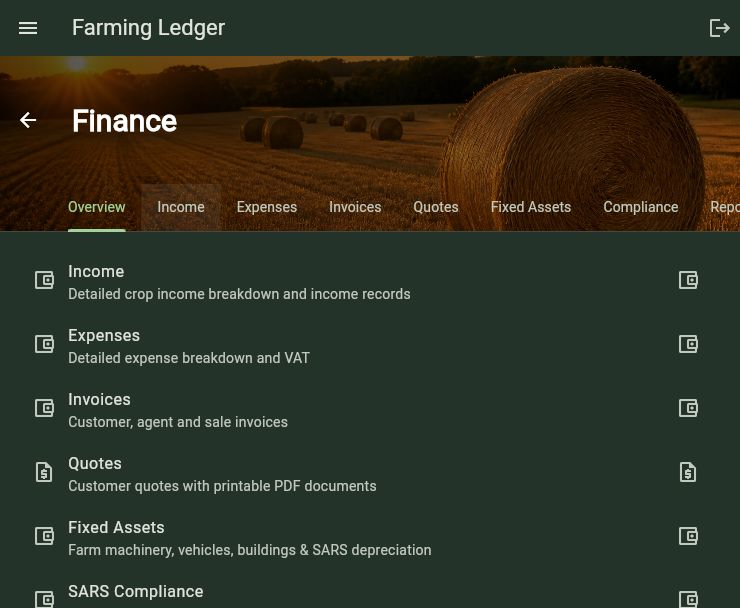
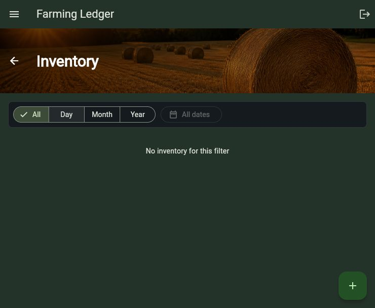
Land and work
Build records around the places where work happens.
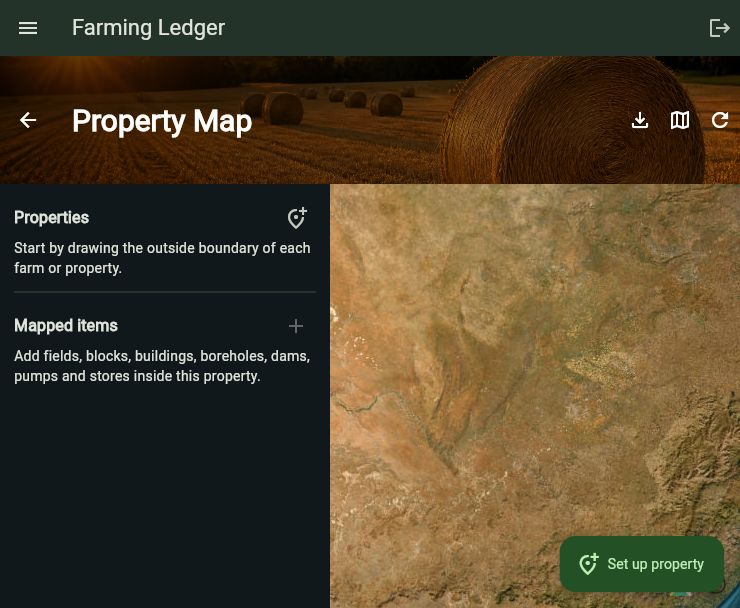
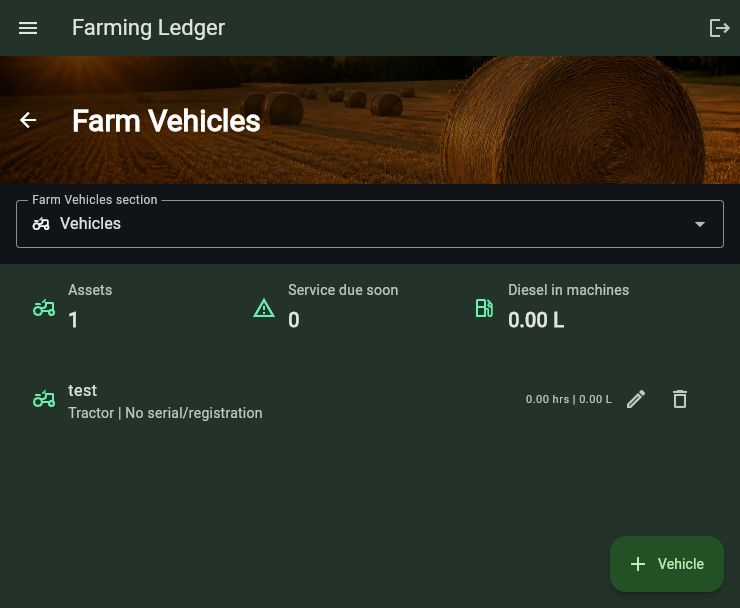
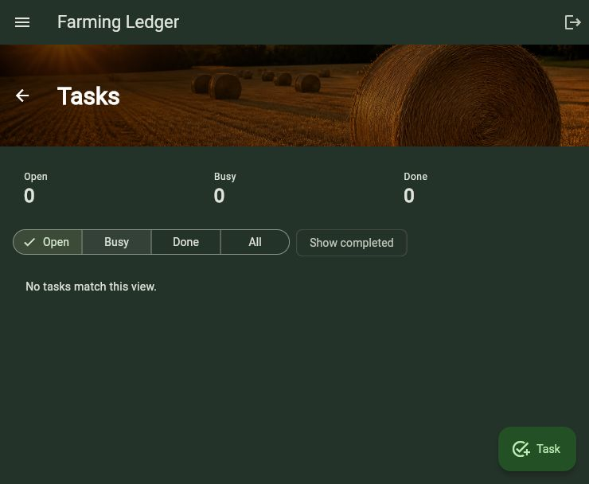
Production
Record crops, poultry, and livestock from the same farm workspace.
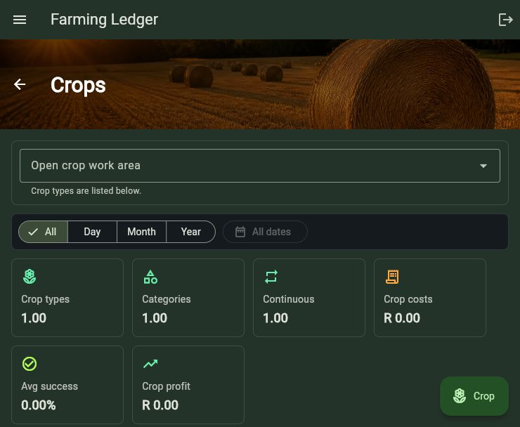
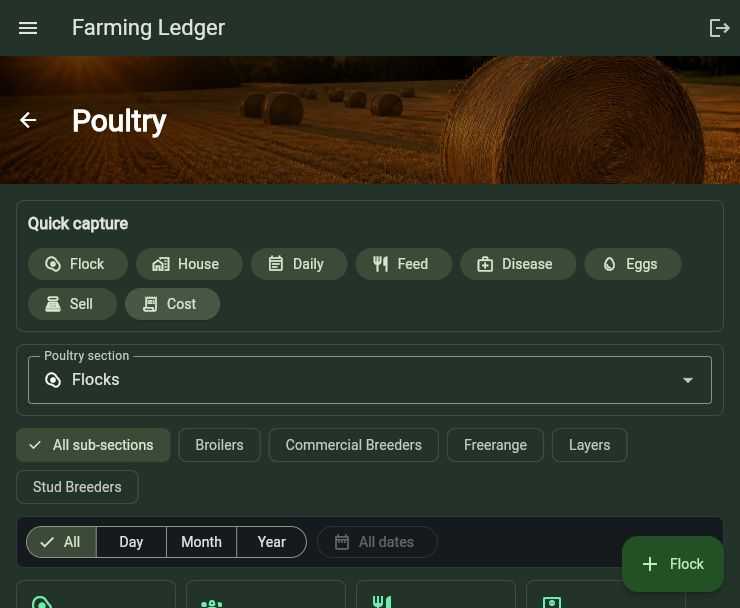
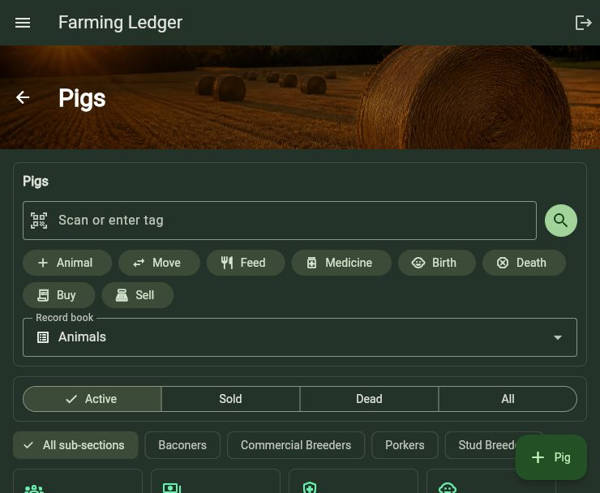
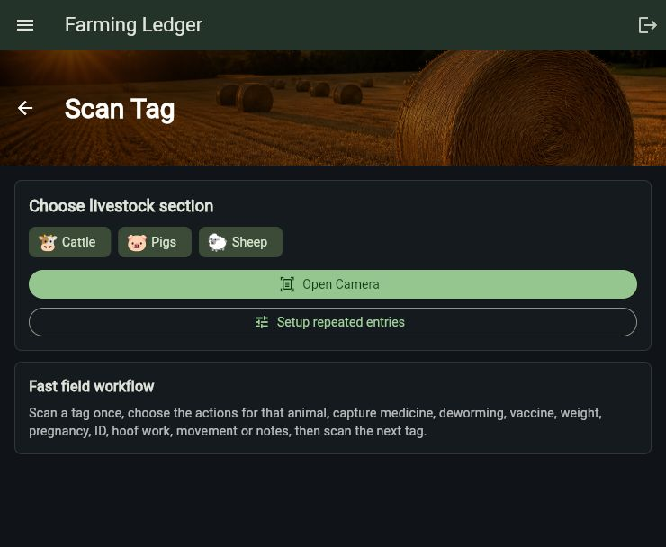
People and trade
Keep access and relationships inside the same app.
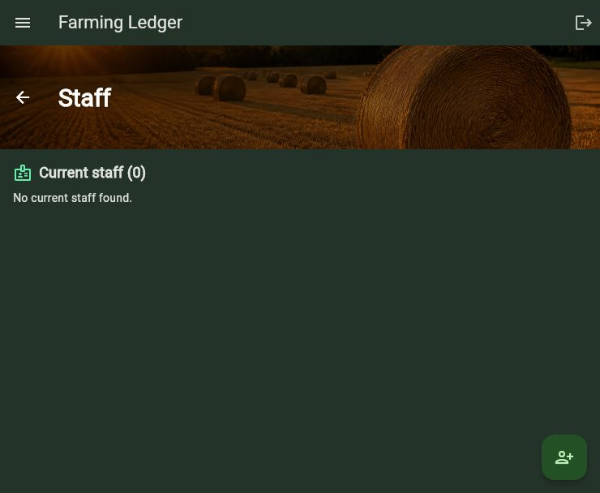
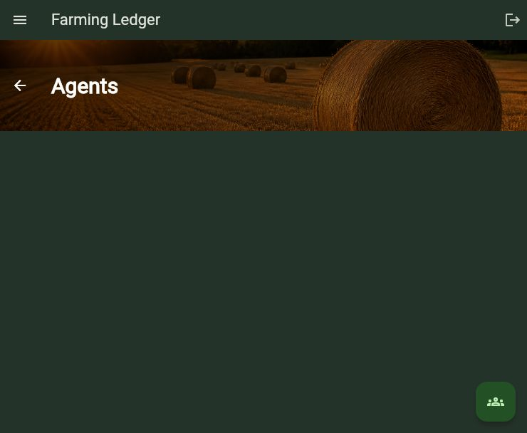
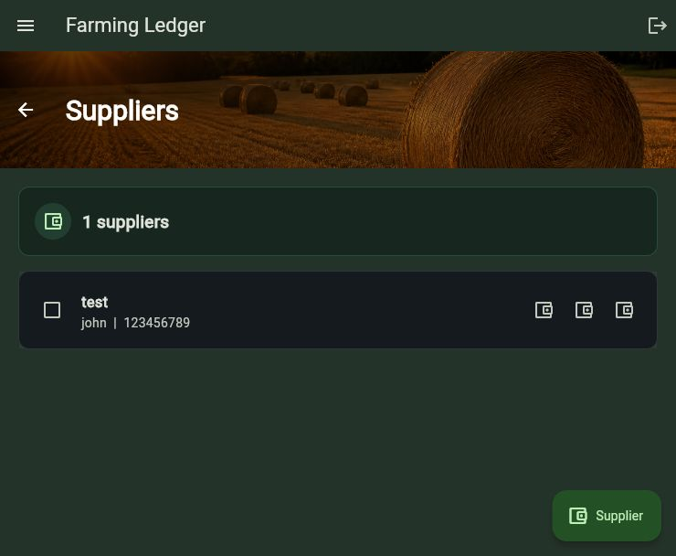
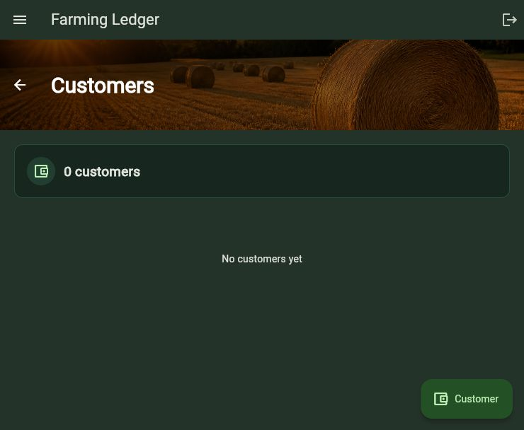
System
Set up the farm and control the account.
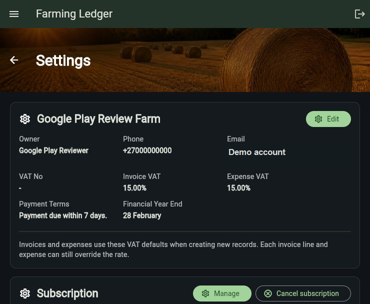